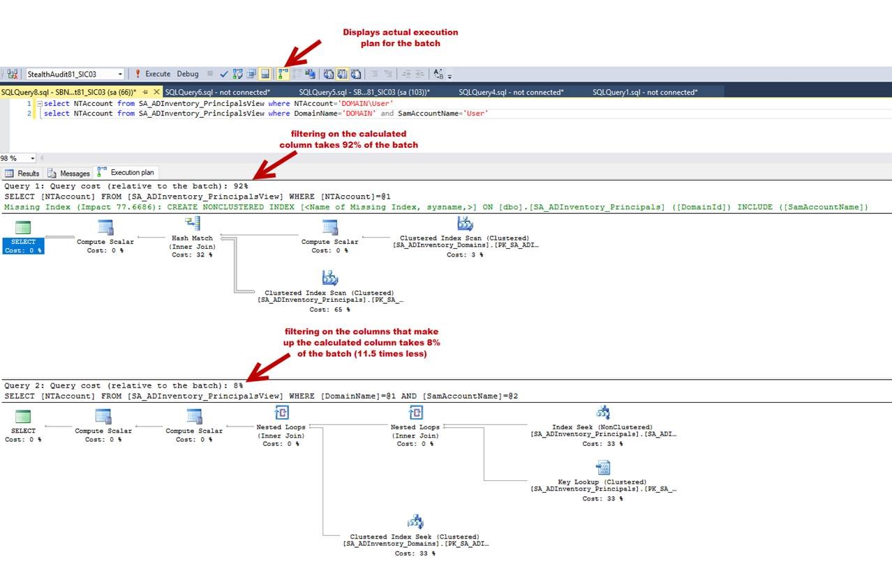

Summary: Covers performance best practices for joining and filtering on calculated columns in ADInventory and Data Governance Views
Issue: Something to keep in
mind - NTAccount ('Domain\SAMAccountName') is a calculated value in the Data Governance
and ADInventory views, so joining on it is very slow. It's actually something like this in
the background:
SA_ADInventory_Domains.Name+'\'+SA_ADInventory_Principals.SamAccountName
In situations where you need to join or filter based on calculated columns,
it's better to join on IDs if you can, and on the parts that make up the column if you
can't get the IDs easily. If joining a "natural" (non-calculated) column to a calculated
column that's a concatenation of other columns, making a temp table with the pieces of the
concatenation is a good first step, and will typically be faster than joining on the
calculated column - especially for a large dataset.
Instructions: Here's the
substring to split up domain and username when given 'Domain\SAMAccountName' format:
select
'DOMAIN\John.Smith'
, SUBSTRING('DOMAIN\John.Smith',1,(CHARINDEX('\','DOMAIN\John.Smith,1)-1))
as SCADomain
, SUBSTRING('DOMAIN\John.Smith',(CHARINDEX('\','DOMAIN\John.Smith,1)+1),LEN('DOMAIN\John.Smith))
as SCASamAccountName
Looking at the execution plan to compare the two versions, joining on the
concatenated value was 99% compared to 1% when joining the two columns. In lab tests with
a limited dataset, my join on calculated columns took 3 seconds. Joining on two columns
was 1% of the batch and the time to insert was negligible. Here's a scaled down,
simplified example you can try in your lab after running ADInventory that shows how the
two compare. The exact ratio of performance of the two queries in the batch may vary based
on the contents of your database:
select NTAccount from SA_ADInventory_PrincipalsView where NTAccount='DOMAIN\User'
select NTAccount from SA_ADInventory_PrincipalsView where DomainName='DOMAIN'
and SAMAccountName='User'

Moral of the story: never, ever join on NTAccount or
TrusteeNTStyleName in standard views unless you have absolutely no choice, or the
environment is small enough that you don't have to worry about performance. If you're working on something custom for a smaller environment, please take the time to
join "the right way" so the solution is scalable in other environments (or as the
environment grows).
Other examples:
CN -
Similarly,
CN is also a calculated value based on the DistinguishedName of the AD object (the "Value"
column in the SA_ADInventory_DistinguishedNames table).
SUBSTRING(dn.Value, 4, PATINDEX('%[^\,],%',dn.Value)
- 3)
Unfortunately, CN is not being collected anywhere else, so there is no
substitute for it as far as I know. so grab a coffee if you need to join on CN with a big
dataset. Or maybe consider collecting it in the Extended Attributes table and joining back
to the other AD data on PrincipalID. That might be faster.
Product:
StealthAUDIT
Module: SA
- DC - Active Directory;SA - DC - FSAA - Activity;SA - DC - FSAA - DFS;SA - DC - FSAA -
Permissions;SA - DC - SPAA - Activity;SA - DC - SPAA - Permissions
Versions:
All
Legacy Article ID:
2222